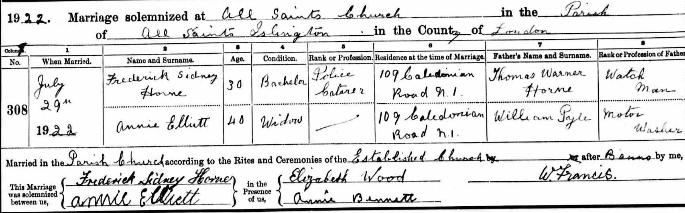
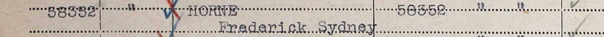

Frederick Sidney Horne 1890 - c1969
[ Home ] | [ Calendar ] | [ Surnames Index ] | [ Family History ]A police caterer and the son of Thomas Horne (a brewer's drayman) and Harriett Woods, Frederick Horne, the first cousin twice-removed on the father's side of <a href="I1.html">Nigel Horne</a>, was born in St Pancras, London, England on Sep 19, 1890<span class="citation">1,2,3</span> and baptized in Camden, London, England on Nov 16, 1890. He married Annie Elliett at All Saints, Islington, London, England on Jul 29, 1922<span class="citation">5</span>.</p><p>Frederick spent all of his life in London, England. Throughout his life, he lived in several places around the county: at Derby Buildings, Britannia Street in St Pancras on Mar 31, 1901<span class="citation">7</span>, on Apr 2, 1911<span class="citation">8</span> and on Jun 19, 1921<span class="citation">9</span> (when he was living with his mother, Harriett); on 109 Caledonian Road in Islington in 1922; and at 75 Bingfield Street in Islington in 1931<span class="citation">6</span> and on Sep 29, 1939<span class="citation">1</span>. He served in the army from 1914 to 1920 (<em>soldier Number: 58352, Rank: Private, Corps: Royal Army Medical Corps</em>). Frederick In 1921 he was working at Canteen Committee at -, Hyde Parish.<p>He died <i>c.</i> Nov 1969 in Wandsworth, London<span class="citation">3,4</span>.
Parents
- Thomas Warner was born c. Nov 1854
- Harriett was born in 1860
Citations
- 1939 Register - Findmypast (was the head of the household)
- England & Wales births 1837-2006 - Findmypast
- England & Wales deaths 1837-2007 - Findmypast
- England & Wales, Death Index: 1984-2005 Online publication - Provo, UT, USA: The Generations Network, Inc., 2007.Original data - General Register Office. England and Wales Civil Registration Indexes. London, England: General Register Office. © Crown copyright. Published by permission of the Cont
- England & Wales Marriages 1837-2005 - Findmypast
- London, England, Electoral Registers, 1832-1965 Ancestry.com Operations, Inc.
- 1901 England, Wales & Scotland Census - Findmypast (was age 10 and the son of the head of the household)
- 1911 Census for England & Wales - Findmypast (was age 20 and the son of the head of the household)
- 1921 Census Of England & Wales - Findmypast (was age 30 and the son of the head of the household)
Media
Frederick Sidney Horne - Annie Elliett Marriage

WW1 Victory Medal Rolls

1939 Register Transcription - TNA-R39-0662-0662H-009-22
1939 Register - TNA/R39/0662/0662H/009/21
England & Wales marriages 1837-2005 Transcription - BMD-M-1931-2-AZ-000596-133
England & Wales births 1837-2006 Transcription - BMD-B-1890-4-AZ-000257-198
England & Wales deaths 1837-2007 Transcription - BMD-D-1969-4-AZ-000609-105
1901 England, Wales & Scotland Census - GBC/1901/0006707268
1939 Register Transcription - TNA-R39-0298-0298C-008-24
Britain, Campaign, Gallantry & Long Service Medals & Awards - GBM/MCI/1962434
1911 Census For England & Wales - GBC-1911-RG14-00709-0467-3
1921 Census Of England & Wales - GBC/1921/RG15/00743/0403/03
Family Tree

Generated by Ged2Site. Last updated on Jul 20, 2025